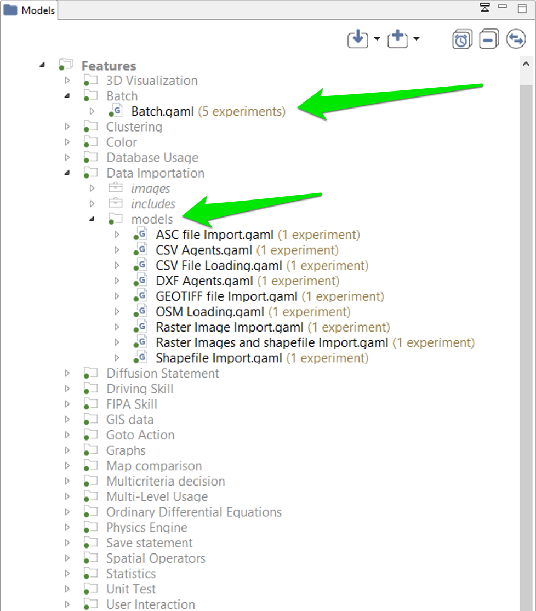
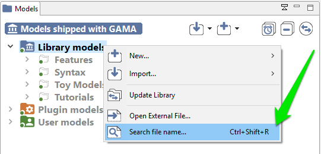
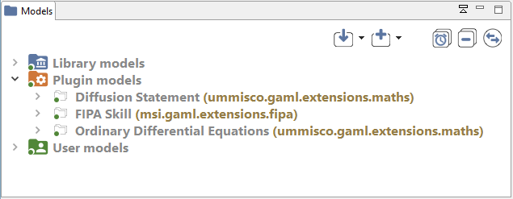
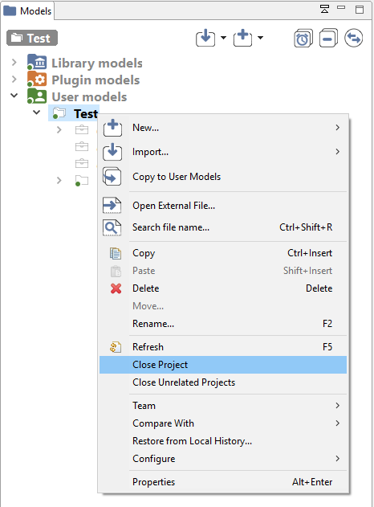
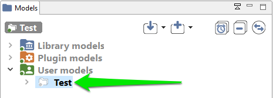
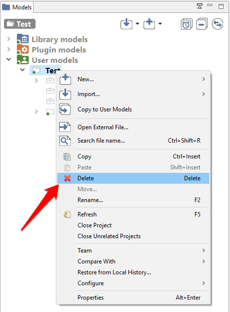
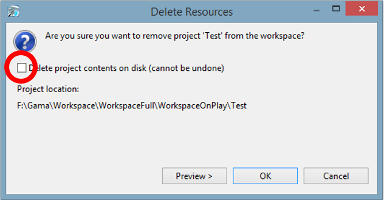

Navigating in the Workspace
All the models that you edit or run using GAMA are accessible from a central location: the Navigator, which is always on the left-hand side of the main window and cannot be closed. This view presents the models currently present in (or linked from) your workspace.

Table of contents
Status of projects and models
All the projects and models have an icon with a red or green circle on it. This eases to locate models containing compilation errors (red circle) and projects that have been successfully validated (green circle).

The Different Categories of Models
In the Navigator, models are organized in four different categories: Models library, Plugin models, Test models, and User models. This organization is purely logical and does not reflect where the models are actually stored in the workspace (or elsewhere). Whatever their actual location, model files need to be stored in projects, which may contain also other files (called resources) needed for the models to function (such as data files). A project may, of course, contain several model files, especially if they are importing each other, if they represent different models on the same topic, or if they share the same resources.

Library models
This category represents the models that are shipped with each version of GAMA. They do not reside in the workspace but are considered as linked from it. This link is established every time a new workspace is created. Their actual location is within a plugin (msi.gama.models) of the GAMA application. This category contains 7 main projects in GAMA 1.8.1, which are further refined in folders and sub-folders that contain model files and resources.

The 7 main projects on the Library models are:
- Data: all these plugins illustrate how to manage data in GAML. This includes how to import data (in all the supported formats) into a model, export (i.e. save) agents or data in the simulations in files, clean data (e.g. clean a road network), get and save data in databases, and use data analysis operators.
- GAML Syntax: these models have the only goal to illustrate the syntax of the GAML language. This includes how to use the various data structures (list, map, matrix...), architectures, loop, interactions, and conditional structures, or how to schedule agents...
- Model Exploration: all these models illustrate the various ways to explore models and in particular the various possible experiment (batch, multi-simulations...).
- Modeling: these models provide implementations of various classical difficulties encountered by modelers: how to make agents move (on a graph, a grid...), how to implement decision-making process...
- Toy Models: these models are replications of classical models from the literature, including Sugarscape, Schelling, ants, boids...
- Tutorials: this project contains all the files of the various tutorials (available from the website).
- Visualization and User Interaction: these models illustrate most of the GAMA features in terms of visualization and interactions with the simulation, e.g. the 3D visualization...

It may happen, on some occasions, that the library of models is not synchronized with the version of GAMA that uses your workspace. This is the case if you use different versions of GAMA to work with the same workspace. In that case, it is required that the library be manually updated. This can be done using the "Update library" item in the contextual menu.

To look up for a particular model in the library, users can use the "Find model..." search bar, which allows looking for models by their title (for example, models containing "BDI" in the example below).

Plugin models
This category represents the models that are related to a specific plugin (additional or integrated by default). The corresponding plugin is shown between parenthesis.

When you add an additional plugin extending the GAML language is added, a new project can be added to this category.
Test models
These models are unit tests for the GAML language: they aim at testing each element of the language to check whether they produce the expected result. The aim is to avoid regression after evolutions of the software. They can be run from the validation view.
User models
This category regroups all the projects that have been created or imported in the workspace by the user. Each project can be actually a folder that resides in the folder of the workspace (so they can be easily located from within the filesystem) or a link to a folder located anywhere in the filesystem (in case of a project importation). Any modification (addition, removal of files...) made to them in the file system (or using another application) is immediately reflected in the Navigator and vice-versa.
Model files, although it is by no means mandatory, usually reside in a sub-folder of the project called models. Similarly, all the test models are located in the tests folder.

Inspect Models
Each model is presented as a node in the navigation workspace, including Experiment buttons and/or a Contents node and/or a Uses node and/or a Tags node and/or an Imports node.

- Imports: The node Impots lists all the model files that are imported in the current model.

- Uses node: The node Uses is present if your model uses some external resources, and if the path to the resource is correct (if the path to the resource is not correct, the resource will not be displayed under Uses).


- Tags node: The node Tags lists all the tags that have been specified in the header of the model.

Contents: The node Contents describes the tree of all the elements in the model. It is similar to the Overview view.
**Experiment button **: Experiment buttons are present if your model contains experiments (it is usually the case !). To run the corresponding experiment, just click on it. To learn more about running experiments, jump into this section.

Moving Models Around
Model files, as well as resources, or even complete projects, can be moved around between the "Models Library"/"Plugin Models" and "Users Models" categories, or within them, directly in the Navigator. Drag'n drop operations are supported, as well as copy and paste. For example, the model Life.gaml, present in the "Models Library", can perfectly be copied and then pasted in a project in the "Users Model". This local copy in the workspace can then be further edited by the user without altering the original one.

Closing and Deleting Projects
Users can choose to get rid of old projects by either closing or deleting them. Closing a project means that it will still reside in the workspace (and be still visible, although a bit differently, in the Navigator) but its model(s) won't participate to the build process and won't be displayable until the project is opened again.
 
Deleting a project must be invoked when the user wants this project to not appear in the workspace anymore (unless that is, it is imported again). Invoking this command will effectively make the workspace "forget" about this project, and this can be further doubled with a deletion of the project's resources and models from the filesystem.
 